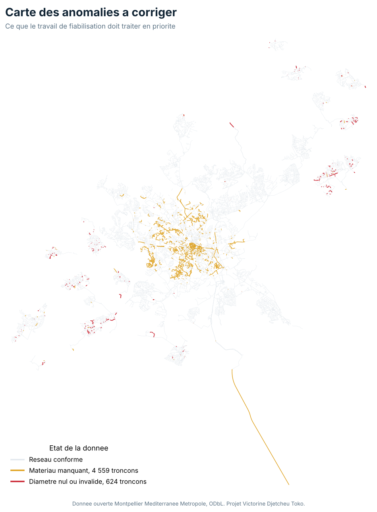
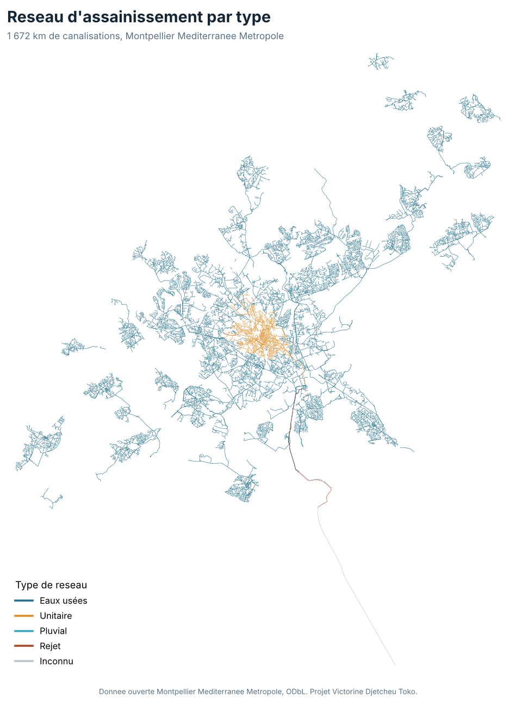
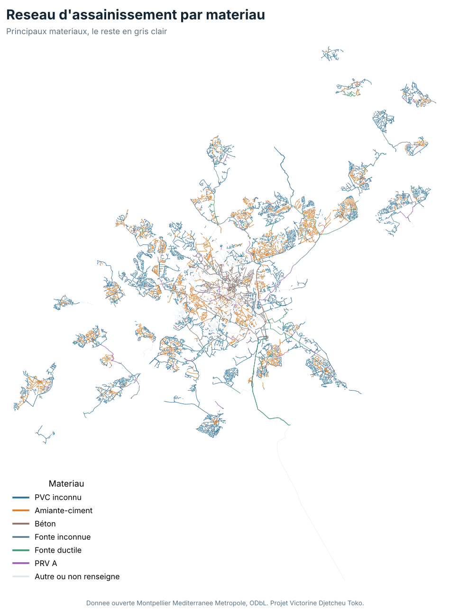

J'aime explorer la donnée géographique, et je monte régulièrement des projets par curiosité, pour le plaisir d'apprendre. Par intérêt pour les réseaux, j'ai pris une vraie base patrimoniale d'assainissement, en données ouvertes, et je l'ai fiabilisée de bout en bout, contrôler, corriger, puis valoriser. Le réseau compte 53 202 canalisations, soit 1 672 km, et 51 932 regards. La donnée est ouverte, sous licence ODbL, en Lambert 93. J'ai tout mené sous PostgreSQL et PostGIS, avec des requêtes SQL, puis restitué le résultat en cartes et en indicateurs.



Un, intégration des canalisations et des regards dans PostgreSQL et PostGIS, index spatial, longueur calculée. Deux, contrôle de topologie et de géométrie. Trois, contrôle d'exhaustivité et de fiabilité par requêtes SQL, 624 diamètres invalides, 4 559 canalisations sans matériau, les cotes à moitié vides. Quatre, valorisation, indicateurs patrimoniaux et cartes thématiques. Les scripts SQL sont dans le dossier scripts, le rapport complet dans le dossier qualite.